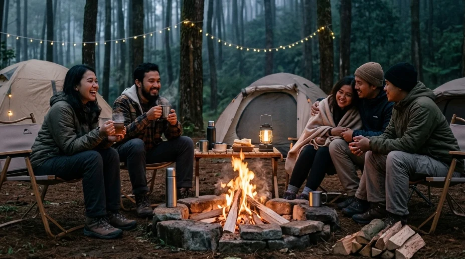

Di tengah tekanan kehidupan kota yang serba cepat dan penuh polusi, kebutuhan untuk melakukan "pelarian" sejenak (*healing*) tidak lagi bisa ditawar. Menghabiskan akhir pekan di pusat perbelanjaan atau sekadar menginap di hotel sudah dirasa monoton oleh sebagian besar masyarakat urban. Itulah mengapa, tren pencarian terkait Paket Camping Murah Batu Malang di Area Kemah Hutan Pinus Batu yang Estetik dan Sejuk melonjak drastis di tahun 2026 ini.
Kota Batu, dengan kontur perbukitannya yang memukau, telah lama dinobatkan sebagai primadona pariwisata Jawa Timur. Dan berbicara tentang wisata alam, tidak ada yang bisa mengalahkan nuansa otentik tidur di bawah naungan pohon pinus yang menjulang tinggi ke langit. Artikel panduan komprehensif ini akan menguliti secara tuntas mengapa Anda harus memilih *camping* di hutan pinus, apa saja keuntungan finansial yang didapat dari menyewa paket murah, hingga bagaimana cara menikmati liburan estetik ini tanpa harus direpotkan oleh urusan logistik dan peralatan berat.
1. Mengapa Memilih Area Kemah Hutan Pinus di Batu Malang?
Berkemah di area yang didominasi oleh pohon pinus menawarkan sensasi dan keunggulan visual yang sangat berbeda jika dibandingkan dengan berkemah di padang rumput terbuka atau di tepi pantai.
Suasana Estetik dan Teduh Sepanjang Hari
Pohon pinus memiliki struktur batang yang lurus dan menjulang tinggi, menciptakan semacam "atap alami" (*canopy*) berkat dedaunannya yang rimbun di bagian atas. Hal ini membuat area kemah tetap terasa sangat teduh dan nyaman meskipun matahari sedang terik-teriknya di siang hari bolong. Ketika pagi hari tiba, sinar matahari (ray of light) akan menerobos masuk dari sela-sela batang pinus dan memantul pada kabut tipis pegunungan, menciptakan efek visual sinematik yang sangat estetik dan sangat diidamkan oleh para pecinta fotografi alam.
Kualitas Udara Sejuk Pegunungan yang Menyegarkan
Selain faktor visual, hutan pinus dikenal memiliki kemampuan luar biasa dalam memfilter udara. Daun pinus mengeluarkan aroma khas berupa minyak atsiri (fitonsida) yang secara medis terbukti mampu memberikan efek relaksasi pada sistem syaraf manusia. Menghirup udara sejuk dan bersih di hutan pinus lereng pegunungan Batu tidak hanya membersihkan paru-paru Anda, tetapi juga membantu menurunkan hormon kortisol penyebab stres secara drastis.
2. Keuntungan Mengambil Paket Camping Murah Batu Malang
Banyak wisatawan pemula yang mengurungkan niat untuk berkemah karena membayangkan betapa mahal dan repotnya harus membeli semua peralatan gunung dari nol. Di sinilah konsep paket kemah hadir sebagai penyelamat.
Hemat Biaya dan Bebas dari Rasa Repot
Jika Anda harus membeli tenda *double layer*, *sleeping bag*, matras empuk, hingga perlengkapan memasak dan pencahayaan, Anda bisa dengan mudah menghabiskan dana di atas Rp 2,5 juta. Padahal, perlengkapan tersebut mungkin hanya akan Anda gunakan setahun sekali. Dengan memanfaatkan Paket Camping Murah Batu Malang di Area Kemah Hutan Pinus Batu yang Estetik dan Sejuk, Anda hanya perlu mengeluarkan biaya ratusan ribu rupiah untuk rombongan keluarga. Anda menghemat banyak uang, tenaga, dan tidak perlu pusing memikirkan cara merawat tenda agar tidak berjamur saat disimpan di rumah.
Fasilitas Lengkap Berkonsep Comfort Camping
Konsep yang diusung oleh pengelola masa kini adalah *Comfort Camping* (kemah nyaman). Harga "murah" bukan berarti Anda mendapatkan kualitas tenda murahan yang bocor saat hujan. Paket penyewaan ini dirancang khusus agar wisatawan cukup datang membawa ransel berisi baju ganti (*just bring your luggage*), sementara seluruh infrastruktur berat telah selesai di-set-up (didirikan) oleh tim lapangan sebelum kedatangan Anda.
BACA JUGA (Tips Budgeting):
3. Fasilitas Apa Saja yang Didapat dari Paket Camping Ini?
Agar Anda memiliki gambaran yang jelas mengenai apa yang Anda bayar, berikut adalah rincian standar logistik yang biasa dimasukkan ke dalam paket *all-in* di kawasan Batu:
Tenda Premium Double Layer Anti Badai
Bukan tenda parasut biasa, paket ini memastikan Anda tidur di dalam tenda Double Layer (memiliki lapisan jaring sirkulasi udara di dalam dan kain *waterproof* penahan hujan di luar). Tenda ini menggunakan rangka berbahan alloy yang sangat kokoh untuk memecah hembusan angin gunung, memastikan keluarga Anda aman dari basahnya embun yang menetes (*kondensasi*).
Matras Tebal dan Sleeping Bag Hangat
Lantai tenda akan dialasi dengan kombinasi matras aluminium foil (untuk memantulkan hawa dingin dari tanah) dan ditumpuk dengan matras spons atau kasur angin yang empuk. Untuk mengunci panas tubuh, setiap tamu akan diberikan fasilitas Sleeping Bag (kantong tidur) berbahan *fleece/polar* yang telah di-*laundry* harum sebelum pemakaian.
Akses Toilet Bersih dan Colokan Listrik
Kelemahan wisata alam di masa lalu telah diperbaiki total. Penyewaan paket kemah di tempat yang dikelola profesional sudah mencakup akses ke deretan blok toilet permanen model kloset duduk (*flushing*) dengan aliran air gunung yang lancar. Lebih jauh lagi, pengelola telah menarik kabel colokan listrik (stop kontak) yang aman di setiap area tenda, sehingga Anda bisa men-charge *smartphone*, menyalakan lampu hias, atau menghidupkan kipas portabel tanpa perlu khawatir kehabisan daya.
4. Rekomendasi Spot Area Kemah Hutan Pinus Batu yang Estetik
Ada banyak lahan pinus, namun tidak semuanya dikelola menjadi tempat yang nyaman. Berikut adalah rekomendasi teratas yang wajib Anda pertimbangkan.
Kawasan Batu Sunrise Camp (Goa Pinus)
Menjawab kebutuhan spesifik pada pencarian Paket Camping Murah Batu Malang di Area Kemah Hutan Pinus Batu yang Estetik dan Sejuk, nama Batu Sunrise Camp menduduki peringkat satu. Spot ini tidak hanya dipenuhi oleh tegakan pinus yang menjulang, tetapi juga memiliki keistimewaan letak geografis yang sangat unik: berada di ketinggian yang langsung menghadap ke arah lembah timur.
Di tempat ini, Anda mendapatkan paket alam yang *triple-combo*. Anda menikmati teduhnya hutan pinus di siang hari, menyaksikan hamparan lampu kota (*City Light*) Malang Raya yang gemerlap di malam hari, dan dipungkasi oleh atraksi magis fajar menyingsing (*Golden Sunrise*) tanpa harus keluar jauh dari tenda di pagi harinya. Lahan parkirnya juga dikonsep ramah kendaraan (*campervan-friendly*), memungkinkan Anda memarkir mobil langsung di sebelah lapangan tenda yang disewa.
Kawasan Hutan Pinus Bedengan
Sebagai opsi alternatif yang juga kuat di sektor nuansa hutan, Bumi Perkemahan Bedengan menawarkan tajuk pinus yang lebih lebat dan rapat. Keunggulannya terletak pada adanya aliran sungai dangkal berbatu yang sangat jernih di tengah-tengah kawasan kemah. Spot ini sangat cocok jika Anda menyukai bunyi gemericik air (*white noise*) sebagai lagu pengantar tidur, meskipun pemandangan matahari terbit di tempat ini agak terhalang oleh rapatnya kanopi pohon.

Duduk bersantai beralaskan kursi lipat di bawah naungan pohon pinus adalah cara terbaik untuk melatih ketenangan (mindfulness) jiwa Anda. (Dokumentasi: Batu Sunrise Camp)5. Aktivitas Seru Saat Berkemah di Hutan Pinus
Jangan biarkan waktu berlalu hanya dengan berdiam diri di dalam tenda. Rancanglah aktivitas komunal yang bisa mempererat ikatan (*bonding*) bersama teman atau keluarga Anda.
Hammocking dan Fotografi Alam yang Instagramable
Batang pohon pinus yang lurus dan kuat adalah fondasi sempurna untuk memasang hammock (tempat tidur gantung). Berayun perlahan di udara sambil membaca buku atau mendengarkan musik akustik adalah definisi dari slow living yang sesungguhnya. Jangan lupa, siapkan kamera *smartphone* Anda. Kontras antara warna gelap kulit kayu pinus, kabut putih, dan warna-warni cerah dari kain tenda Anda akan menghasilkan komposisi foto yang luar biasa *Instagramable* dan estetik.
Barbeque Malam Hari dan Kehangatan Api Unggun
Saat malam mulai mendingin, ini adalah waktu yang tepat untuk beraksi di "dapur lapangan". Gunakan kompor portabel untuk memasak daging tipis (*grill/barbeque*), membakar sosis, atau sekadar merebus mie instan. Seringkali, paket sewa tenda juga memberikan Anda akses atau bahan untuk membuat api unggun kecil di *fire-pit* komunal. Mengelilingi nyala api yang hangat sambil menyeruput secangkir cokelat panas adalah momen deep-talk paling sempurna yang bisa Anda bagikan bersama orang terdekat.
BACA JUGA (Panduan Persiapan):
6. Tips Menikmati Camping Estetik di Hutan Pinus
Untuk memastikan liburan impian Anda berjalan tanpa cacat, terapkan tiga tips sakti berikut ini sebelum Anda menyalakan mesin kendaraan menuju Batu Malang:
- Persiapkan Layering Pakaian: Estetik di foto bukan berarti mengabaikan suhu. Suhu di bawah pinus bisa sangat merosot di malam hari. Pakailah sistem busana berlapis: baju *dry-fit* di dalam, dilapis jaket *fleece* polar, dan ditutup oleh jaket parasut (*windbreaker*) tahan angin.
- Bawa Kotak P3K Pribadi: Meskipun pengelola memiliki posko keamanan, keberadaan apotek sangatlah jauh dari kawasan hutan. Selalu bawa tas *First Aid* berisi paracetamol, obat anti mual, plester, minyak kayu putih botol besar, dan obat tetes mata.
- Lakukan Reservasi Lebih Awal: Tempat se-estetik Batu Sunrise Camp selalu diburu oleh wisatawan. Sangat haram hukumnya untuk datang secara go-show (langsung datang) di hari Sabtu/Minggu. Hubungi admin via WA setidaknya 2 minggu sebelum hari-H untuk mem-*booking* area tenda yang paling strategis.
7. Kesimpulan
Kembali menyatu dengan alam tidak lagi harus diartikan sebagai sebuah siksaan fisik. Dari pemaparan menyeluruh tentang Paket Camping Murah Batu Malang di Area Kemah Hutan Pinus Batu yang Estetik dan Sejuk, kita bisa menarik satu benang merah yang jelas: liburan premium di alam bebas kini sangat terjangkau dan anti-repot. Anda dapat menikmati teduhnya atap alami pohon pinus, memanjakan paru-paru dengan oksigen yang bersih, serta menyaksikan keajaiban *city light* maupun *sunrise* dengan mengandalkan fasilitas penyewaan All-In. Bersama operator tepercaya layaknya Batu Sunrise Camp yang telah menyediakan tenda anti-badai dan sanitasi bersih, tugas Anda hanyalah mengemas pakaian ganti, melepaskan beban pikiran, dan mulai mengukir kenangan indah di jantung alam Kota Batu.